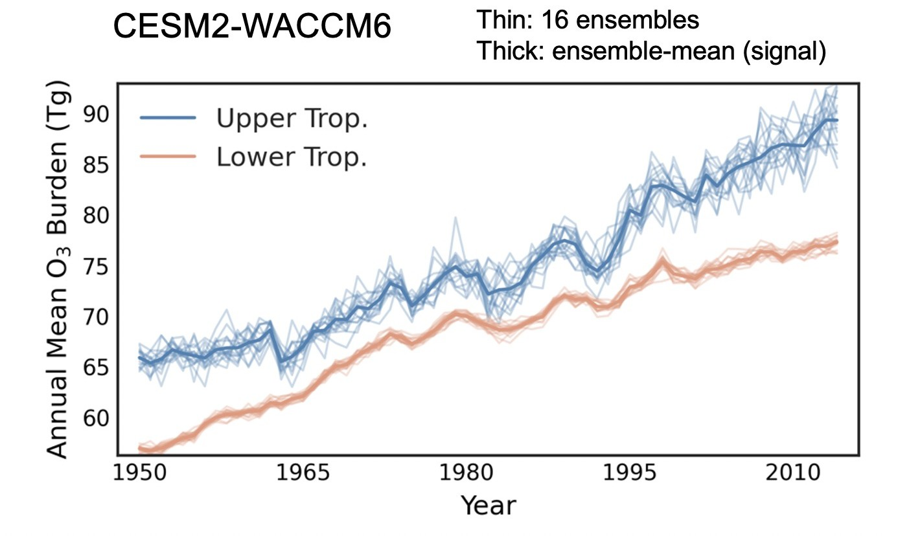

Research
Tropospheric ozone & climate
MIT · 2022–present
Detecting and attributing tropospheric ozone trends
I separate human-caused ozone trends from internal climate variability, detect a human fingerprint in satellite records of upper tropospheric ozone, and attribute recent increases to precursor emissions.
Read more
Climate impacts of tropospheric ozone
I quantify ozone and methane radiative forcing from precursor emissions and from air pollution controls, and study how the climate system responds to tropospheric ozone changes.
Read more